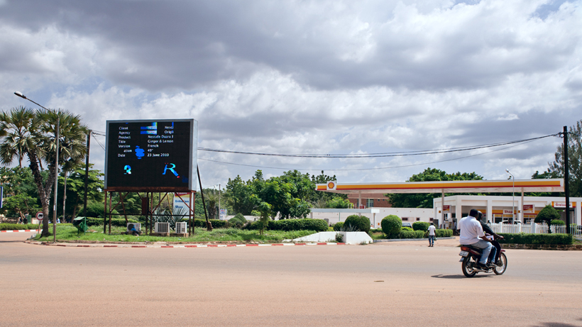

ROAD
PROJECT TEXT -
Road
Taking the high road is easy to say and it reveals the innocence and the ignorance of a bystander. However, the most absurd is the fact that people do believe in the so-called bystander. People lift their heads to move towards the downward regard... even we have a bunch of questions...
you do not need to question. the beacon of light is the answer. you do not need to question. even though you wonder the destination you do not need to question. even though you have another answer. how dare you question the belief is your power how dare you question could it be possible that you have another destination how dare you question no one have another answer i know you may question why the beacon of light glimmers i know you may question why it takes so long to get to the destination i know you may question do i believe in that answer please do not question the beacon of light does not glimmer but glitter please do not question work harder to reach the destination please do not question even you wonder.... even you wonder.... even you wonder... you could question will the leafs get greener and greener? you could question will they still wander and wonder? you could question will the road stay as red as on the instant forever? i would say only if you are a dreamer i would say only if you are a dreamer i would say only if you are a dreamer well..., anyways, see you tomorrow, Burkina Faso
Road
Taking the high road is easy to say and it reveals the innocence and the ignorance of a bystander. However, the most absurd is the fact that people do believe in the so-called bystander. People lift their heads to move towards the downward regard... even we have a bunch of questions...
you do not need to question. the beacon of light is the answer. you do not need to question. even though you wonder the destination you do not need to question. even though you have another answer. how dare you question the belief is your power how dare you question could it be possible that you have another destination how dare you question no one have another answer i know you may question why the beacon of light glimmers i know you may question why it takes so long to get to the destination i know you may question do i believe in that answer please do not question the beacon of light does not glimmer but glitter please do not question work harder to reach the destination please do not question even you wonder.... even you wonder.... even you wonder... you could question will the leafs get greener and greener? you could question will they still wander and wonder? you could question will the road stay as red as on the instant forever? i would say only if you are a dreamer i would say only if you are a dreamer i would say only if you are a dreamer well..., anyways, see you tomorrow, Burkina Faso
- 